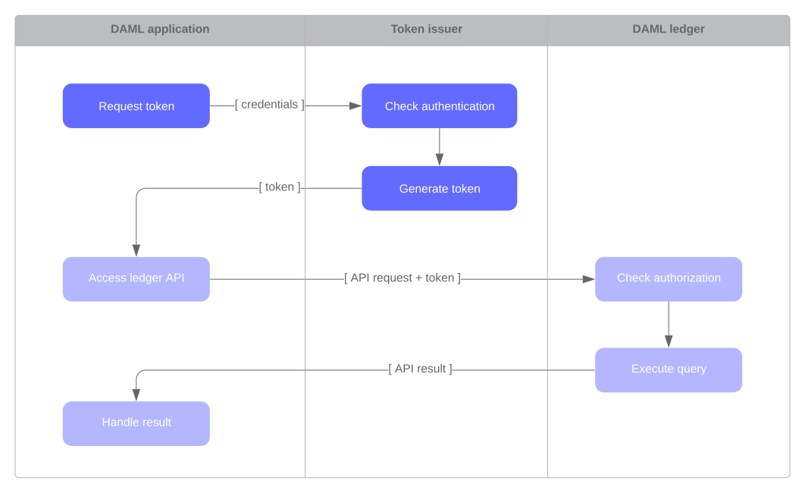

Authorization¶
When developing Daml applications using SDK tools, your local setup will most likely not perform any Ledger API request authorization – by default, any valid Ledger API request will be accepted by the sandbox.
This is not the case for participant nodes of deployed ledgers. For every Ledger API request, the participant node checks whether the request contains an access token that is valid and sufficient to authorize that request. You thus need to add support for authorization using access token to your application to run it against a deployed ledger.
Note
In case of mutual (two-way) TLS authentication, the Ledger API client must present its certificate (in addition to an access token) to the Ledger API server as part of the authentication process. The provided certificate must be signed by a certificate authority (CA) trusted by the Ledger API server. Note that the identity of the application will not be proven by using this method, i.e. the application_id field in the request is not necessarily correlated with the CN (Common Name) in the certificate.
Introduction¶
Your Daml application sends requests to the Ledger API exposed by a participant node to submit changes to the ledger (e.g., “exercise choice X on contract Y as party Alice”), or to read data from the ledger (e.g., “read all active contracts visible to party Alice”). Your application might send these requests via a middleware like the JSON API.
Whether a participant node can serve such a request depends on whether the participant node hosts the respective parties, and whether the request is valid according to the Daml Ledger Model. Whether a participant node will serve such a request to a Daml application depends on whether the request includes an access token that is valid and sufficient to authorize the request for this participant node.
Acquire and Use Access Tokens¶
How an application acquires access tokens depends on the participant node it talks to and is ultimately set up by the participant node operator. Many setups use a flow in the style of OAuth 2.0.
In this scenario, the Daml application first contacts a token issuer to get an access token. The token issuer verifies the identity of the requesting application, looks up the privileges of the application, and generates a signed access token describing those privileges.
Once the access token is issued, the Daml application sends it along with every Ledger API request. The Daml ledger verifies: - that the token was issued by one of its trusted token issuers - that the token has not been tampered with - that the token had not expired - that the privileges described in the token authorize the request
How you attach tokens to requests depends on the tool or library you use to interact with the Ledger API. See the tool’s or library’s documentation for more information. (E.g. relevant documentation for the Java bindings and the JSON API.)
Access Tokens and Rights¶
Access tokens contain information about the rights granted to the bearer of the token. These rights are specific to the API being accessed.
The Daml Ledger API uses the following rights to govern request authorization:
public: the right to retrieve publicly available information, such as the ledger identityparticipant_admin: the right to adminstrate the participant nodecanReadAs(p): the right to read information off the ledger (like the active contracts) visible to the partypcanActsAs(p): same ascanReadAs(p), with the added right of issuing commands on behalf of the partyp
The following table summarizes the rights required to access each Ledger API endpoint:
| Ledger API service | Endpoint | Required right |
|---|---|---|
| LedgerIdentityService | GetLedgerIdentity | public |
| ActiveContractsService | GetActiveContracts | for each requested party p: canReadAs(p) |
| CommandCompletionService | CompletionEnd | public |
| CompletionStream | for each requested party p: canReadAs(p) | |
| CommandSubmissionService | Submit | for submitting party p: canActAs(p) |
| CommandService | All | for submitting party p: canActAs(p) |
| Health | All | no access token required for health checking |
| LedgerConfigurationService | GetLedgerConfiguration | public |
| MeteringReportService | All | participant_admin |
| PackageService | All | public |
| PackageManagementService | All | participant_admin |
| PartyManagementService | All | participant_admin |
| ParticipantPruningService | All | participant_admin |
| ServerReflection | All | no access token required for gRPC service reflection |
| TimeService | GetTime | public |
| SetTime | participant_admin | |
| TransactionService | LedgerEnd | public |
| All (except LedgerEnd) | for each requested party p: canReadAs(p) | |
| UserManagementService | All | participant_admin |
| GetUser | authenticated users can get their own user | |
| ListUserRights | authenticated users can list their own rights | |
| VersionService | All | public |
Access Token Formats¶
Applications should treat access tokens as opaque blobs. However, as an application developer it can be helpful to understand the format of access tokens to debug problems.
All Daml ledgers represent access tokens as JSON Web Tokens (JWTs), and there are two formats of the JSON payload used by Daml ledgers.
Note
To generate access tokens for testing purposes, you can use the jwt.io web site.
User Access Tokens¶
Daml ledgers that support participant user management also accept user access tokens. They are useful for scenarios where an application’s rights change dynamically over the application’s lifetime.
User access tokens do not encode rights directly like the custom Daml claims tokens explained in the following sections. Instead, user access tokens encode the participant user on whose behalf the request is issued.
When handling such requests, participant nodes look up the participant user’s current rights before checking request authorization per the table above. Thus the rights granted to an application can be changed dynamically using the participant user management service without issuing new access tokens, as would be required for the custom Daml claims tokens.
User access tokens are JWTs that follow the OAuth 2.0 standard. There are two different JSON encodings: An audience-based token format that relies on the audience field to specify that it is designated for a specific Daml participant and a scope-based audience token format which relies on the scope field to designate the purpose. Both formats can be used interchangeably but if possible, use of the audience-based token format is recommend as it is compatible with a wider range of IAMs, e.g., Kubernetes does not support setting the scope field and makes the participant id mandatory which prevents misuse of a token on a different participant.
Audience-Based Tokens¶
{
"aud": "https://daml.com/jwt/aud/participant/someParticipantId",
"sub": "someUserId",
"exp": 1300819380
}
To interpret the above notation:
audis a required field which restricts the token to participant nodes with the given ID (e.g.someParticipantId)subis a required field which specifies the participant user’s IDexpis an optional field which specifies the JWT expiration date (in seconds since EPOCH)
Scope-Based Tokens¶
{
"aud": "someParticipantId",
"sub": "someUserId",
"exp": 1300819380,
"scope": "daml_ledger_api"
}
To interpret the above notation:
audis an optional field which restricts the token to participant nodes with the given IDsubis a required field which specifies the participant user’s IDexpis an optional field which specifies the JWT expiration date (in seconds since EPOCH)scopeis a space-separated list of OAuth 2.0 scopes that must contain the"daml_ledger_api"scope
Custom Daml Claims Access Tokens¶
This format represents the rights granted by the access token as custom claims in the JWT’s payload, like so:
{
"https://daml.com/ledger-api": {
"ledgerId": null,
"participantId": "123e4567-e89b-12d3-a456-426614174000",
"applicationId": null,
"admin": true,
"actAs": ["Alice"],
"readAs": ["Bob"]
},
"exp": 1300819380
}
where all of the fields are optional, and if present,
ledgerIdandparticipantIdrestrict the validity of the token to the given ledger or participant nodeapplicationIdrequires requests with this token to use that application id or not set an application id at all, which should be used to distinguish requests from different applicationsexpis the standard JWT expiration date (in seconds since EPOCH)actAs,readAsand (participant)adminencode the rights granted by this access token
The public right is implicitly granted to any request bearing a non-expired JWT issued by a trusted issuer with matching ledgerId, participantId and applicationId values.
Note
All Daml ledgers also support a deprecated legacy format of custom Daml claims
access tokens whose format is equal to the above except that the custom claims
are present at the same level as exp in the token above,
instead of being nested below "https://daml.com/ledger-api".